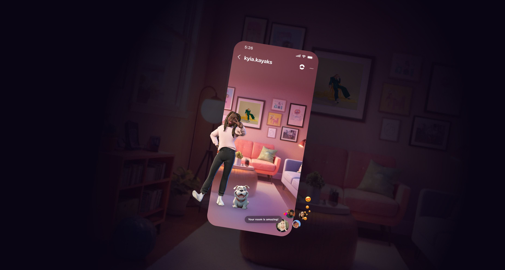
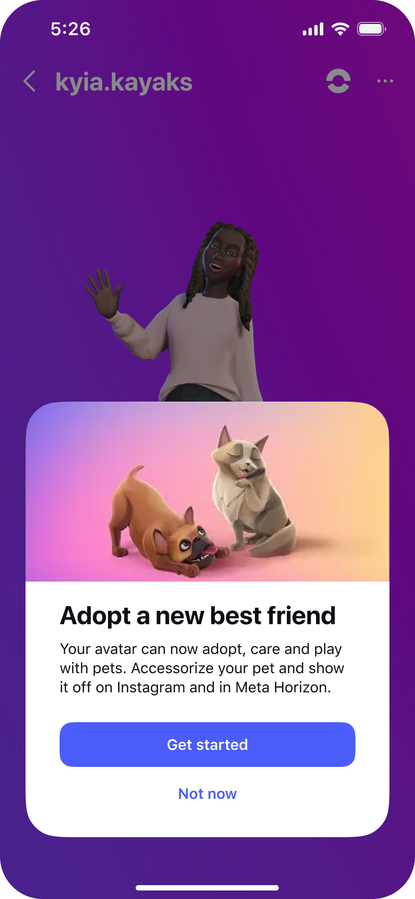
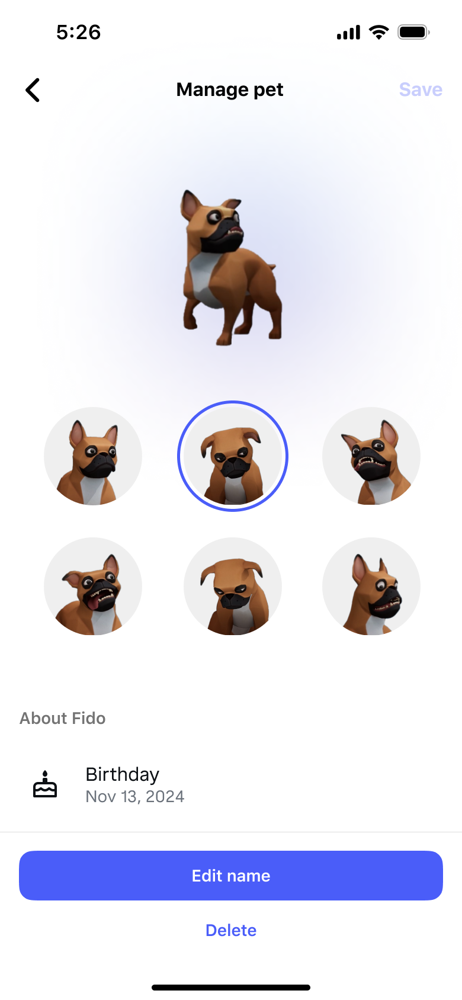
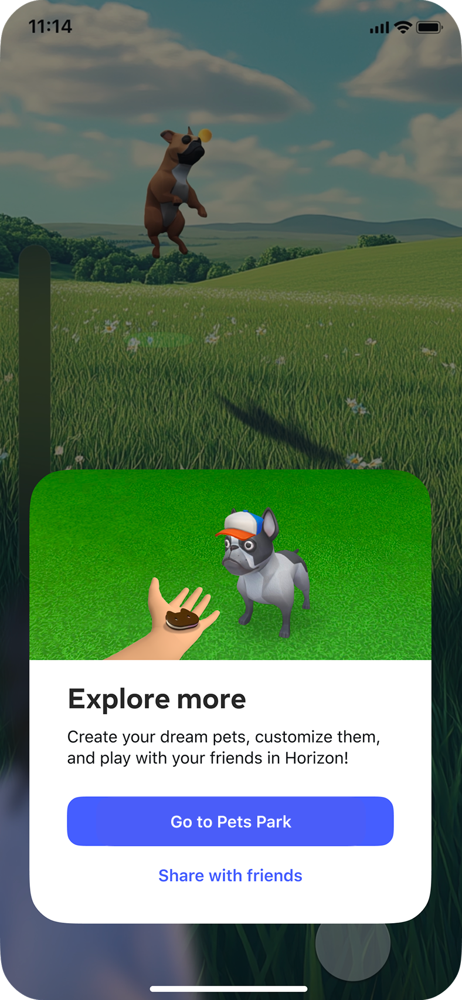
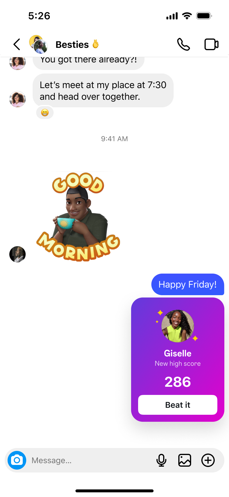
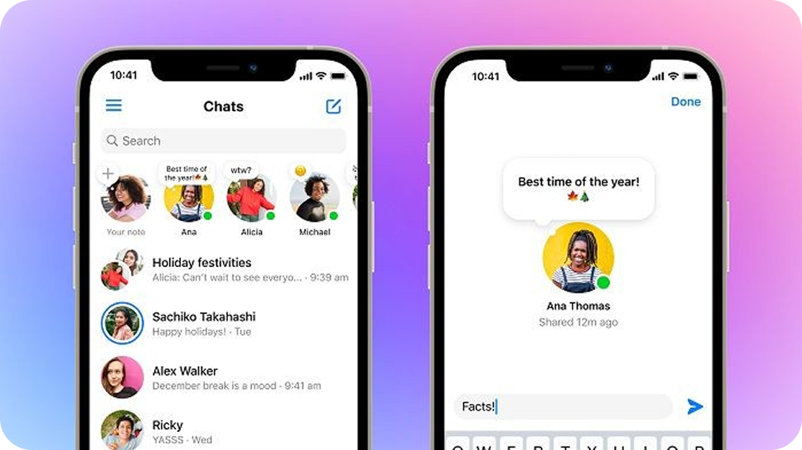
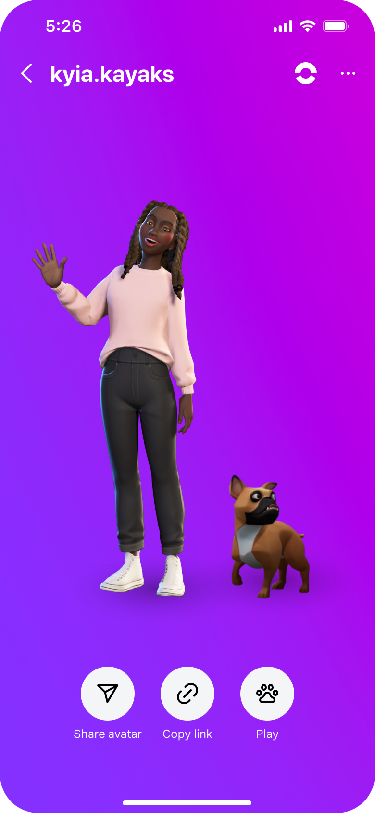

Bridge to Metaverse Vision
I led Instagram's metaverse vision sprint — from strategy through concept exploration to leadership presentation. Instagram Pets earned rare cross-org buy-in from both Instagram and Reality Labs, was prioritized as P0, and secured 4 additional engineers to bridge mobile users into the metaverse.
Key Results




The Instagram Pets concept — avatar companions that live across Instagram surfaces and bridge into metaverse spaces.
Meeting Teens Where They Are
Meta's metaverse ambitions were built around VR headsets — but the audience they most wanted to reach, teens, was already on mobile. The question wasn't how to build a new metaverse app. It was: How do you introduce metaverse concepts into a platform 2 billion people already use daily?

Metaverse ≠ Mobile
Existing metaverse products required VR hardware — excluding the mobile-first teen audience that drives Instagram engagement.

Expression Gap
Teens wanted more playful, low-pressure ways to connect beyond photos and text — but Instagram lacked the interactive, identity-driven features they craved.
A Phased Path to the Metaverse
I reframed the problem: instead of asking teens to come to the metaverse, bring the metaverse to them. I proposed a two-phase strategy — start with lightweight social features teens already understand on Instagram, then use that foundation to pull them into richer virtual spaces over time.
- Magical portal
- Personalized virtual space
- Avatar-to-avatar hangouts
- Deeper customization
- Avatar sticker rewards
- Low pressure connection on Notes
- Companion virtual pets
- Instant games & rewards
Drag to explore
This framing was key to earning leadership support — it turned an abstract metaverse bet into a concrete, low-risk product strategy.
Leading the Vision Sprint
I structured the sprint in 3 phases: diverge on opportunity spaces, converge on promising directions, then pressure-test against teen behaviors and Instagram's existing surfaces. Each week ended with a crit where we killed weak concepts and doubled down on strong ones.


Vision sprint artifacts — from opportunity mapping to concept explorations with the design team.
A Breadth of Ideas
We explored 5 concepts across expression, companionship, and identity — each prototyped as a working mockup to test how it would feel inside Instagram's real surfaces.
Avatar Greenscreen
Teens use their avatars as expressive stand-ins — reacting to content and sharing personality without showing their face.
Virtual Pets
Virtual companions that live on your profile, react in DMs, and travel with you to Horizon's Pets Park — a bridge between Instagram and the metaverse.

Mini Games
Mini-games like fetch create daily engagement loops — a reason to come back and connect with friends.
Metaverse Rewards
A reward system tied to pet care and social activity — driving streaks and daily visits through gamified companionship.
My "Vibe"
Personal spaces where teens curate their personality — friends can visit and discover each other's vibe.
Why Instagram Pets Won
Instagram Pets hit all three principles and bridged both phases — pets live in your profile today and travel to Horizon's Pets Park tomorrow. Reality Labs already had the 3D assets ready, making the bridge immediate and viable.
Self Exploratory
Teens customize and nurture a virtual companion that reflects their personality — encouraging identity exploration through pet styles, accessories, and behaviors.
Creative Outlet
Pet accessories, avatar pairings, and shareable moments give teens a canvas for self-expression — without the pressure of posting photos of themselves.
Feels at Home in IG
Instagram Pets live across existing surfaces — Notes, DMs, profiles — making the feature feel native to Instagram rather than a foreign metaverse import.
| Concept | Self Exploratory | Creative Outlet | Feel at Home | Bridges to Metaverse |
|---|---|---|---|---|
| Avatar Greenscreen | ○ | ● | ○ | ○ |
| Mini Games | ◒ | ○ | ● | ○ |
| Metaverse Rewards | ◒ | ○ | ● | ● |
| My "Vibe" | ● | ● | ○ | ◒ |
| Instagram Pets | ● | ● | ● | ● |
● Strong ◒ Partial ○ Weak — Instagram Pets was the only concept that scored strong across all criteria.
From Vision Sprint to Strategic Foundation
What started as a vision sprint became a company-wide proof point. Instagram Pets hit a critical dogfooding milestone — validating product-market fit on Horizon Pets Park and informing long-term investment. This work aligned two product orgs around a shared strategic direction, laying the foundation for a seamless bridge toward the Bridge to Metaverse vision.

Instagram users can bring their pets to Horizon Pets Park — What users play ↗
What I Learned
Start Light, Think Bold
A sweeping metaverse pitch was too novel to land on Instagram. What resonated was a concrete first step — start with Tamagotchi-inspired Pets in the viewer, then expand. Phasing the vision turned ambiguity into a funded roadmap.
Behavior First, Technology Second
Instagram Pets won because it mapped to what teens already do — nurture, collect, share with friends. The technology followed naturally once the behavior felt right.
Align Orgs Through Shared Artifacts
Instagram and Reality Labs had different goals. Weekly crits with working prototypes — not slide decks — gave both teams something tangible to react to, turning competing priorities into a shared direction.